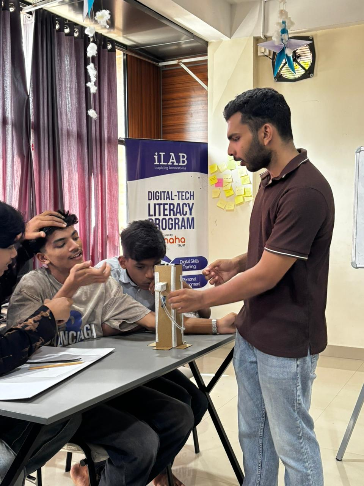
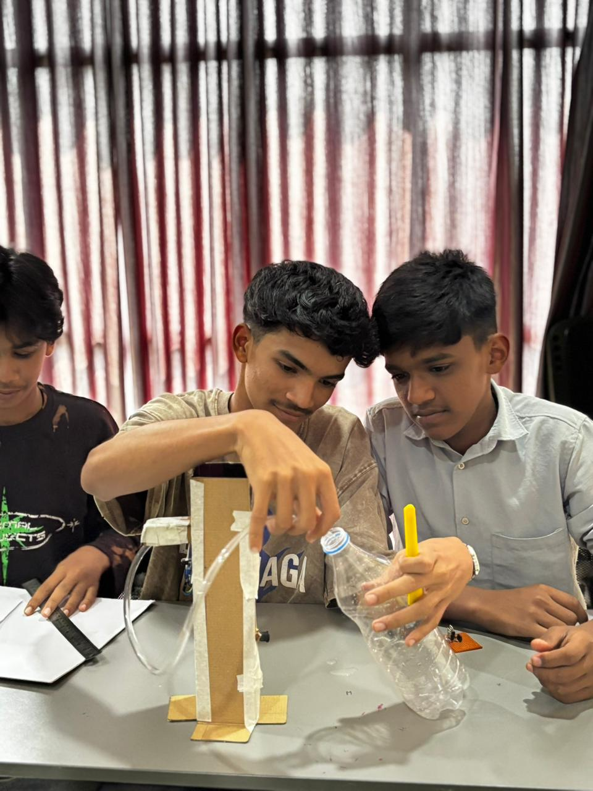

Overview
After successfully building the automation circuit in Session 07, it was time to turn the electronics into a real product. Students learned how to enclose hardware safely, measure materials, and apply design thinking to make their water dispensers both functional and visually appealing.
Topics
Introduction to Design Thinking (Empathize, Define, Ideate, Prototype, Test)
Product housing and enclosure design basics
Material fabrication — safe cutting, folding, and gluing
Mounting sensors and pumps securely
Activities
Sketched initial concepts for the dispenser body
Cut and prepared foam/acrylic sheets for the chassis
Mounted the IR sensor on the front panel
Added creative designs, colors, and final aesthetic touches
Photos


Highlights
- Bridged the gap between raw electronics and consumer products
- Students exercised incredible creativity decorating their dispensers
- Learned the importance of sensor placement and clear lines of sight
- Every team walked away with a fully housed, working project